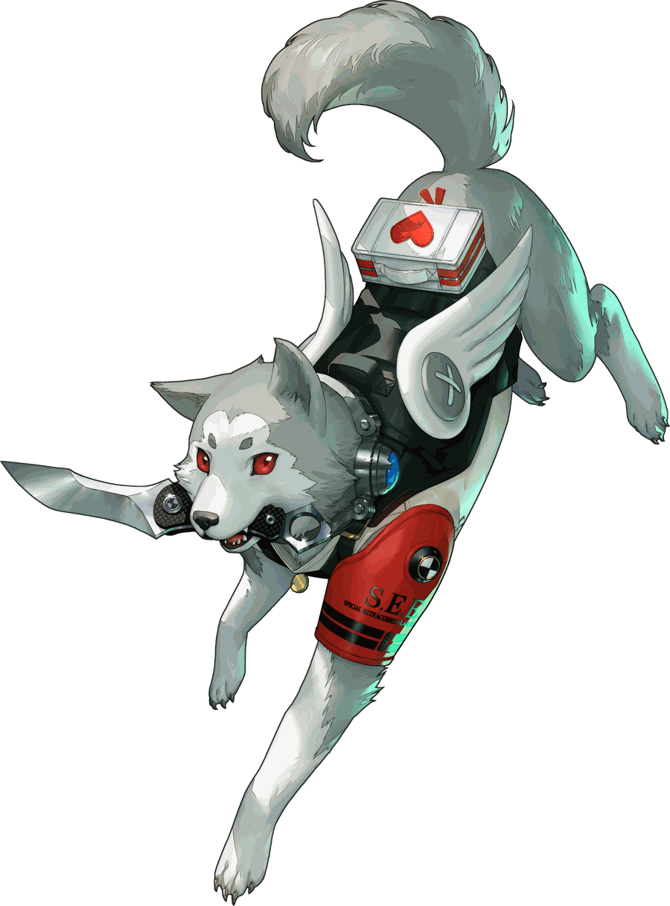

O melhor amigo que o seu servidor já teve.
Música, uma economia inteirinha em Marus, loja, colecionáveis, UNO e o imprevisível Maru & Cia. O Koromaru cuida do servidor como cuida de qualquer coisa: com lealdade total — e uma cobrança de imposto pontual toda semana.

Cinco sistemas, uma barra lateral.
Cada peça grande do Koromaru ganhou a própria página, explicada com calma. Clica em qualquer uma pra abrir.
Música
Fila, loop, modo 24 horas por dia e busca direto por nome ou link.
Economia
A moeda é o Maru: trabalho diário, salário, Pix, dívida e um imposto semanal que ninguém escapa.
Maru Store
Loja com cargos e itens, inventário de colecionáveis e trocas entre membros.
Maru & Cia
O telefone toca sozinho quando o chat esquenta. Decore a frase e concorra a prêmios.
UNO
Salas de 2 a 6 jogadores, regras da casa votadas por todo mundo, aposta opcional.
Perguntas frequentes
Preciso de permissão especial pra usar os comandos?
A maioria dos comandos é liberada pra qualquer membro. Só os marcados como "Admin" na página de Comandos exigem permissão de Administrador no servidor.
O UNO continua se o bot reiniciar?
Ainda não — se o bot cair no meio de uma partida, ela é perdida. É uma limitação conhecida, então evite apostar muito enquanto isso não muda.
Onde eu peço um comando novo ou reporto um bug?
Na página Sugestões — dá pra mandar direto por lá.
Quais prefixos o Koromaru responde?
r!, -, k!, K! e comandos de barra
(/).
Vem ver o Koromaru de perto.
Ele é exclusivo deste servidor — entra no nosso Discord pra conhecer, jogar UNO com a galera e cair no Maru & Cia.
💌 Entrar no servidor